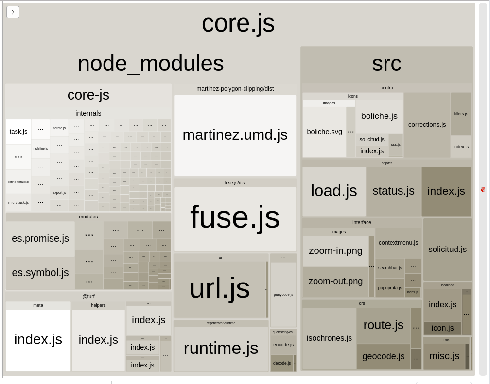

4.2. Particularidades¶
4.2.1. Punto de entrada¶
Hasta ahora hemos definido el punto de entrada de la manera más simple posible:
entry: "./src/js/index.js"
que equivale a:
entry: {
main: "./src/js/index.js"
}
Esta equivalencia es la que provoca que para webpack [name] se
sustituya por main, por lo que:
output: {
filename: "js/[name].bundle.js"
}
provoca que el fichero de salida sea js/main.bundle.js (dentro de
dist/, por supuesto). Como ya se ha explicado, este fichero no contiene
únicamente el punto de entrada src/js/index.js, sino que cualquier
script en javascript que se importe dentro de él y, a se vez, los importados por
los importados, pasarán a formar parte de este fichero resultante. Los ficheros
de otra naturaleza importados en el propio código Javascript o a través del
código HTML o CSS de la aplicación también se procesarán pero para ello será
necesario el uso de plugins y cargadores (como ya se ha practicado) y,
obviamente, el resultado acabará en otros ficheros distintos.
Por tanto, una primera variante es alternar ese nombre predeterminado para
que [name] cambie a otro valor más apropiado:
entry: {
"leaflet.mipluginmolon": "./src/js/index.js"
}
AHora bien, esto no acaba aquí. Si estamos desarrollando una aplicación que se compone de dos páginas web distintas, las cuales usan sendos scripts, podemos hacer:
entry: {
"site": ["./src/js/page1.js", "./src/js/page2.js"]
}
lo cual tendrá el efecto de embutir ambos scripts[1] en un único fichero resultante. Esto es necesario porque al ser dos scripts independientes utilizar el primero u el segundo como punto de entrada no incluiría al otro en la salida. Otra variante es:
entry: {
"page1": "./src/js.page1.js",
"page2": "./src/js.page2.js",
}
que mantendrá ambos scripts separados creando dos ficheros de salida.
Advertencia
Cuando el desarrollo no es una aplicación final, sino una librería, es sumamente importante tener en cuenta que las librerías son útiles porque ofrecen (o sea, exportan) algo al código que las invoca. Al tratar la salida volveremos a este concepto. Es indispensable tener presente que, si un punto de entrada encadena varios archivos, se exportará aquello que exporte el último fichero de la lista. Por eso, debe escribirse esto:
entry: {
main: ["./src/index.css", "./src/index.js"]
}
y no:
entry: {
main: ["./src/index.js", "./src/index.css"]
}
ya que en este segundo caso, se exportará lo que exporte un fichero CSS, o sea, nada.
4.2.2. Carga de módulos¶
4.2.2.1. Sistema de módulos¶
Como se verá en los ejemplos posteriores, lo habitual es que el código requiera cargar módulos propios o ajenos. webpack permite que se usa tanto el sistema CommonJS como el ES2015. Un buen criterio es:
- Usar CommonJS en el fichero de configuración de webpack.
- Usar ES2015 dentro del código de la propia aplicación, ya que es el estándar aprobado y bajo determinadas circunstancias (como no importar aplicaciones de terceros[2] dentro del propio código), genera un código directamente usable en navegadores modernos.
4.2.2.2. Importación de módulos¶
Ya se ha visto que para cargar módulos (al estilo ES2015, por ejemplo) es necesario:
import L from "leaflet";
import $ from "jquery";
Esto funciona sin problemas, pero tiene un inconveniente si pretendemos desarrollar una librería y no un aplicación final. A diferencia de una aplicación final, en la que se pretende generar un resultado que incluya todas las dependencias, cuando se desarrolla una librería, es muy común generar resultandos en los que pueden o no incluirse las dependencias.
Ver también
Véase más adelante multiples resultados.
Como dependiendo de la versión, el resultado incluye o no las librerías de terceros, la importación incondicional dentro del código como la expuesta arriba, no es útil y debe recurrirse a otra que importe sólo dependiendo de cuál sea el resultado. Para ello, webpack posibilita la importación con el plugin Provide en su propia configuración[3]:
// webpack.config.js
const webpack = require("webpack");
// ...
module.exports = {
// ...
plugins: [
new webpack.ProvidePlugin({
L: "leaflet",
$: "jquery"
})
]
}
Para configurar el plugin hay que entender que las claves son identificadores
y los valores cuál módulo se carga, de manera que cuando webpack
encuentre el identificador L en el código procede a cargar el módulo
leaflet[4]. El identificador puede ser la propiedad de un objeto. Por
ejemplo, esto es perfectamente válido:
plugins: [
new webpack.ProvidePlugin({
L: "leaflet",
"L.Control.Search": "leaflet-search",
$: "jquery"
})
]
Entiéndase que lo exportado por el módulo cargado es el valor que adquirirá el identificar en el código. Ahora bien, si el módulo exporta de esta manera:
export {a, b, c}
y nuestra intención es definir el identificador a, podemos entonces hacer:
a: [ "./mimodulo.js", "a" ]
Con lo visto, sin embargo, los módulos cargados seguirán apareciendo en el resultado, con lo que no habremos logrado el objetivo de crear distintos sabores de la librería. Para declarar que tales módulos son externos y que no deben ser incluidos dentro del código, webpack dispone del atributo externals:
const config = {
// ...
externals: {
leaflet: "L",
jquery: "$",
"leaflet-search": [ "L", "Control", "Search" ]
}
}
En este caso, las claves representan las librerías externalizadas (o sea, los
valores del objeto que se pasó como argumento a Provide) y los valores son la
variable global asociada a aquello que exporte la librería. Por tanto, muy
comúnmente al usar Provide y externals lo que se hace es intercambiar claves
por valores y valores con claves, con la diferencia que en externals un
identificador que no sea global, sino el atributo de otro objeto debe notarse en
forma de array. Es por ello que L.Control.Search se ha convertido en
["L", "Control", "Search"].
No obstante, si la librería externa se construyó como módulo UMD, entonces es necesario definir cómo está disponible la librería dependiendo del sistema que se use para cargarla:
externals: {
leaflet: {
root: "L",
commonjs: "leaflet",
commonjs2: "leaflet",
amd: "leaflet"
}
}
Advertencia
Si creamos una librería de terceros que queremos, no sólo que pueda cargarse desde un navegador, sino que pueda usarse como componente en un desarrollo posterior con NodeJS, deberemos usar esta ultima forma para definir sus dependencias.
Por supuesto, este atributo sólo debe cargarse en los sabores que quieran externalizar las librerías de terceros, esto es, en los sabores que no incluyen dependencias.
Advertencia
Si al usar el plugin Provide se usó con algún identificador un array:
plugins: [
new webpack.ProvidePlugin({
L: "leaflet",
"L.MarkerClusterGroup": ["leaflet.markerclustergroup", "MarkerClusterGroup"]
})
]
entonces la propiedad exportada (MarkerClusterGroup en este ejemplo), será añadida automáticamente a la variable global que se indique en externals. Por ese motivo, externals debe definirse así:
externals: {
leaflet: "L",
"leaflet.markerclustergroup": "L"
}
y no asociando ["L", "MarkerCLusterGroup"] a
leaflet.markerclustergroup.
Por hacer
¿Puede llevarse a cabo algo parecido con el plugin Ignore?
4.2.3. Salida¶
Hasta el momento, la definición de nuestra salida se ha reducido a:
output: {
filename: "js/[name].bundle.js"
}
o sea, a definir el nombre que tendrá cada punto de entrada. Además, por defecto, el directorio predeterminado de
salida es dist, de modo que, si un punto de entrada se llama
leaflet.mipluginmolon, la salida se almacenará en
dist/js/leaflet.mipluginmolon.bundle.js.
4.2.3.1. Ruta¶
Un primer cambio consiste en alterar el fichero predeterminado:
const config = {
entry: "./src/js/index.js",
output: {
path: path.resolve(__dirname, "docs"),
filename: "js/[name].bundle.js"
}
}
module.exports = config
4.2.3.2. Formato¶
Un segundo aspecto muy importante es el formato de salida del módulo, porque es indispensable que el código sea accesible, si se ejecuta en un navegador. Podemos distinguir tres casos:
Si nuestro código no exporta nada y no importa ninguna librería porque si usa de terceros, está incluida en el código Javascript resultante[5], no necesitamos hacer ninguna definición especial sobre el formato.
Si nuestro código no necesita exportar nada, pero importa alguna librería externa a la que se acceda a través de una variable global[6], entonces es necesario que tenga formato UMD:
output : { filename: "js/[name].bundle.js", libraryTarget: "umd", umdNamedDefine: false }
Ahora bien, si contribuye definiendo alguna función o similar, aunque no necesite importar porque la integre dentro de un objeto global ya preexistente (p.e. desarrollamos un plugin de Leaflet que añade al objeto
Lla claseL.MiPlugin), es conveniente que el plugin exporte esa función:// ... export default L.MiPlugin = MiPlugin
y que declaremos así la salida:
output : { filename: "js/[name].bundle.js", libraryTarget: "umd", umdNamedDefine: false, libraryExport: "default" }
que significa que el código exportará directamente lo exportado como default.
Si nuestro código necesita exportar al ambiente global, entonces debemos hacer también un módulo UMD, pero asignando un nombre a lo exportado:
output : { filename: "js/[name].bundle.js", libraryTarget: "umd", umdNamedDefine: true, library: "X" }
Al hacer esto, aquello que exporte nuestro código estará disponible a través de la variable global X. Por ejemplo, si nuestro desarrollo es este:
function saludo() { console.log("Hola, soy tu aplicación"); } const version = "0.1", predeterminado = true; export {saludo, version}; export default predeterminado;
Al cargar el script resultante en un navegador:
<script src="dist/codigo.js"></script>
Dispondremos de
X.version,X.saludo()yX.default. Incluso aunque sólo se exporte una entidad y está se defina como predeterminada, tendremos que usarX.default. Si se quiere que una de las entidades exportadas esté accesible directamente a través deX, entonces puede añadirse libraryExport:output : { filename: "js/[name].bundle.js", libraryTarget: "umd", umdNamedDefine: true, library: "X", libraryExport: "default" }
En este caso
Xdevolverá directamentetruey el resto de exportaciones no está disponible.
4.2.4. Procesamiento¶
En principio, webpack procesa de forma nativa sólo código Javascript por lo que cualquier otro tipo de fichero requiere declarar mediante qié cargador debe procesarse. Esto precisamente es lo que se nos presentó al configurar la aplicación simple que tenía ficheros HTML y CSS.
Para llevar a cabo el procesamiento de ficheros no Javascript se requiere definir un conjunto de reglas para cada una de las cuales se defina al menos sobre qué tipo de ficheros se aplica y cuál es el cargador o lista de cargadores que usará. En el ejemplo anteriormente desarrollado se encontraban estas dos reglas:
module: {
rules: [
{
test: /\.css$/i,
use: [MiniCssExtractPlugin.loader,
"css-loader"]
}
]
}
esto es, una para la página web, que usa el cargador html-loader, y otra para el CSS que usa los cargadores css-loader y MiniCssExtractPlugin.loader.
En el ejemplo, hay dos aspectos interesantes a destacar:
Los cargadores, como en el caso de la primera regla admiten opciones. En este caso, además de la sintaxis indica arriba, se puede usar otra más compacta:
{ test: /\.html$/, use: "hml-loader?minimize=true" }
en la que las opciones del cargador pueden proporcionarse con una sintaxis parecida a la query string de una URL.
En cada regla (como en el caso de la segunda) pueden aplicarse varios cargadores encadenadamente, Contrariamente a lo que podría parecer más natural el orden de aplicación es de derecha a izquierda.
Hay, además, otros atributos que pueden añadir condiciones a las reglas como include, exclude, o issuer, esta última aplicable no al nombre del recurso que se procesa, sino al nombre del fichero en el que se encontra la invocación al recurso. También es interesante oneOf para proporcionar una lista de reglas, de las que sólo se procesará la primera que se ajuste a las condiciones indicadas.
Ver también
Esta respuesta en stackoverflow.com es bastante elocuente para entender cómo se aplican las condiciones.
Es también interesante reseñar que use puede ser una función que devuelva el array de cargadores, lo que permite generar tal lista dinámicamente:
{
test: /\.css$/i,
use: function(rsc) {
console.log("Procesando... ", src.resource);
return ["style-loader", "css-loader"];
}
}
4.2.4.1. Ficheros en general¶
Si retomamos el HTML de la aplicación simple y añadimos alguna imagen:
<!DOCTYPE html>
<html lang="es">
<head>
<meta charset="UTF-8">
<title>Aplicación simple</title>
</head>
<body>
<h1>Aplicación simple</h1>
<img src="images/logo512.png" alt="Logo HTML grande">
<img src="images/logo64.png" alt="Logo HTML pequeño">
</body>
</html>
Nota
Para las imágenes se han tomando el logo de HTML5, descargado de la página oficial, en tamaño de 512px y 64px.
Si probáramos inmediatamente a regenerar el bundle, veríamos que escupe un error como consecuencia de que no sabe manejar este tipo de ficheros. Para evitarlo es preciso usar file-loader:
$ npm install file-loader
un cargador que es capaz de tomar cualquier fichero y copiarlo en la salida que indiquemos:
{
test: /\.(png|jpe?g|gif|svg)$/i,
use: ['file-loader?name=images/[name].[ext]']
}
Nota
En el ejemplo, se utiliza únicamente para imágenes, pero puede ser cualquier tipo de fichero, incluido CSS. Sin embargo, no es recomendable utilizarlo para hojas de estilo en algunos casos. Profundizaremos en el procesamiento de CSS más adelante.
Una alternativa a file-loader es url-loader (que internamente necesita file-loader)
$ npm install file-loader url-loader
y que se encarga de dos cosas:
- Copiar el fichero al resultado final.
- Si el fichero es menor que el límite definido (en el ejemplo 4K), en vez de copiar el fichero genera una dataURI en Base64.
Su uso es idéntico al de file-loader excepto porque debemos indicar cuál es el límite:
{
test: /\.(png|jpe?g|gif|svg)$/i,
use: ['url-loader?limit=4096&name=images/[name].[ext]']
}
Para imágenes exclusivamente puede incorporarse, además, img-loader que funciona como minimizador:
# npm install --save-dev img-loader
con una configuración:
{
test: /\.(png|jpe?g|gif|svg)$/i,
use: [
'url-loader?limit=4096&name=images/[name].[ext]',
'img-loader'
]
}
Nota
Obsérvese que file-loader copia ficheros sin alterarlos,
pero no mantiene la estructura de directorios. En todos los ejemplos que
hemos expuesto, las imágenes estén donde estén, acaban en un subdirectorio
llamado images. Para copiar una estructura completa es necesario
recurrir al plugin CopyPlugin.
4.2.4.2. CSS¶
El procesamiento de ficheros CSS admite variantes dependiendo de cuál queremos que sea el resultado del procesamiento. Sin demasiadas explicaciones utilizamos esta:
{
test: /\.css$/i,
use: [MiniCssExtractPlugin.loader, "css-loader"]
}
css-loader procesa el CSS que se enlaza con la clausula
import o se incluye como punto de entrada y genera un módulo de
Javascript. Como esta salida es aún inútil, se presentan varias alternativas:
- MiniCssExtractPlugin.loader
- Toma todos los módulos y los compone en un único fichero CSS que se coloca en el directorio de salida definico mediante output y con el nombre que se proporcione al plugin al incorporarlo a la sección plugins.
- style-loader
Toma los módulos y los incluye dentro de un elemento style del HTML:
{ test: /\.css$/i, use: ["style-loader", "css-loader"] }
- file-loader+extract-loader
extract-loader permite tomar los módulos y generar cadenas de texto, mientras que file-loader es capaz de tomar esas cadenas de texto y generar ficheros de salida, uno por cadena (o sea, por fichero de entrada) con lo que se obtendrán multiples ficheros en vez de uno solamente como al usar MiniCssExtractPlugin.loader:
{ test: /\.css$/i, use: ["file-loader?name=[path][name].css", "extract-loader", "css-loader"] }
Nota
Obsérvese que, aunque se obtiene un fichero de salida por cada fichero de entrada, que es lo que obtendría usando únicamente file-loader, hay una gran diferencia en esta configuración: css-loader entiende y analiza los ficheros CSS por lo que es capaz de reconocer enlaces a otros ficheros incluidos en su contenido a través de cláusulas
@importourl(). El efecto es que esos ficheros referidos también pasarán a procesarse sin necesidad de referirlos explícitamente como punto de entrada o importarlos en el código Javascript conimport.
Por otro lado, también se puede añadir cargadores que actúan antes de la intervención de css-loader:
- postcss-loader
Opera sobre el CSS realizando transformaciones que nos resulten pertinentes:
$ npm install --save-dev postcss-loader autoprefixer cssnanoHay al menos dos que nos pueden resultar intersantes:
La que realiza el plugin autoprefixer, que añade prefijos del vendedor a las opciones cuando es preciso. Obviamente, debe operar justamente antes de css-loader. La configuración, suponiendo que queramos obtener un único CSS, quedará del siguiente modo:
{ test: /\.css$/i, use: [MiniCssExtractPlugin.loader, "css-loader", { loader: "postcss-loader", options: { plugins: () => [require("autoprefixer")] } }] }
Nota
Para saber para qué navegadores debe añadir prefijos, este plugin usa la librería browserlist, que introduciremos al tratar babel.
Nota
Para comprobar que este cargador realmente actúa, podemos añadir al CSS de algún ejemplo, las líneas:
::placeholder { color: gray; }
La que realiza el plugin cssnano, que minimiza el CSS:
{ test: /\.css$/i, use: [MiniCssExtractPlugin.loader, "css-loader", { loader: "postcss-loader", options: { plugins: [ require("cssnano")({preset: "default"}) ] } }] }
- sass-loader o less-loader u otra cargador semejante.
Cuando no escribimos el estilo en CSS sino en otro lenguaje como SASS o Less, requerimos de otro cargador previo que sea capaz de cargar el traductor que realice la tranformación a CSS. Por ejemplo:
$ npm install --save-dev sass-loader node-sass $ npm install --save-dev less-loader node-less
Si optamos por SASS, la configuración podría ser esta:
{ test: /\.(css|sass)$/i, use: [MiniCssExtractPlugin.loader, "css-loader", // Aquí en medio podríamos postcss-loader "sass-loader"] }
Como el procesador de SASS no lleva a cabo ninguna transformación si se topa con un fichero CSS, la regla anterior es perfectamente válida también para ficheros CSS.
Con esta regla, podríamos escribir el estilo:
/* Fichero sass/main.sass */ $fondo: yellow body background-color: $fondo
4.2.4.3. Procesamiento automático¶
Por procesar ficheros automáticamente entendemos hacer que participen en el procesamiento y pasen a formar parte del resultado sin incluirlos explícitamente como punto de entrada. Se procesan automáticamente:
- Si se usa el plugin HtmlWebPackPlugin, las imágenes referidas en los atributos src de las etiquetas img.
- Si se usa css-loader para procesar el código CSS, las imágenes
incluidas en sentencias
url()y las hojas importadas a través deimport.
En cambio, si referimos directamente un fichero dentro del código Javascript como en el ejemplo:
const img = document.createElement("img");
img.setAttribute("alt", "Logo introducido al vuelo");
img.setAttribute("src", "images/logo.svg");
document.body.appendChild(img);
images/logo.svg no se detectará como recurso y, en consecuencia, la
imagen no se procesará automáticamente. Para forzar este procesamiento, lo que
se debe hacer es importar el fichero a una variable y usar esta variable como
recurso:
import logo from "./logo.svg";
const img = document.createElement("img");
img.setAttribute("alt", "Logo introducido al vuelo");
img.setAttribute("src", logo);
document.body.appendChild(img);
4.2.5. Compatibilidad¶
Babel es un componente fundamental de nuestro propósito puesto que
permite sustituir sintaxis demasiado nueva por otra compatible con versiones más
antiguas de Javascript. Para usarlo y que transpile[7] de forma que quede una
sintaxis ampliamente soportada, podemos añadir algunas líneas a
webpack/webpack.production.js:
const merge = require('webpack-merge');
const common = require('./webpack.common.js');
const config = merge(common, {
mode: "production",
module: {
rules: [
{
test: /\.js$/,
exclude: /node_modules/,
use: {
loader: "babel-loader",
options: {
// presets: [ "@babel/env" ] // Sin opciones.
presets: [
["@babel/env", {
debug: true,
}]
]
}
}
},
]
}
});
module.exports = config
e instalar los paquetes pertinentes:
$ npm install --save-dev babel-loader @babel/core @babel/cli @babel/preset-env
Este es el uso más simple, pero podemos ser bastante precisos y afinar mucho más
cuáles son los navegadores que pretendemos soportar. Para ello, debemos tener
presente que babel es capaz de usar la librería browserslist, en cuya documentación puede
leerse cómo expresar el grado de compatibilidad que se pretende conferir al
código. Hay varios modos de incluir este grado de compatibilidad, pero la
documentación recomienda el de incluirlo en package.json a través de
la propiedad browserslist:
"browserslist": {
"production": [
"cover 95% in ES"
],
"oneplus": [
"> 1% in ES"
],
"ie10": [
"> .25% in ES",
"ie >= 10"
],
"relaxed": [
"cover 80% in ES"
]
}
Para probar la lista de navegadores que soportará el código podemos usar la orden:
$ npx browserslist
que usa la definición dada por production, pero podemos aplicar cualquier otra, dando un valor a la variable de ambiente NODE_ENV:
$ NODE_ENV=relaxed npx browserslist
Por tanto, podemos componer nuestra aplicación con:
$ npm run build
$ NODE_ENV=relaxed npm run build
Polyfill
Si se requiere dar soporte en navegadores antiguos a funciones como Promise, Object.assign o Array.from es precisa una configuración más que depende de si disponemos de una versión de babel anterior a la 7.4.
Para versiones anteriores se debe:
Instalar el paquete @babel/polyfill:
# npm install --save @babel/pollyfillNota
No hay errata. Se debe instalar como dependencia y no como dependencia de desarrollo.
Modificar la configuración de webpack para añadir una opción a babel:
const merge = require('webpack-merge'); const common = require('./webpack.common.js'); const config = merge(common, { mode: "production", module: { rules: [ { test: /\.js$/, exclude: /node_modules/, use: { loader: "babel-loader", options: { presets: [ ["@babel/env", { debug: true, useBuiltIns: "usage", }] ] } } }, ] } }); module.exports = config
Con esa opción, sólo se añadirán al código Javascript resultante, el codigo necesario para implementar las funciones pertienen que hayamos incorporado al código.
A partir de la versión 7.4.0, la documentación recomienda usar core-js para lo cual:
Instalamos el paquete correspondiente:
# npm install --save core-js@3Modificamos la configuración de webpack para añadir un par de opciones a babel:
const merge = require('webpack-merge'); const common = require('./webpack.common.js'); const config = merge(common, { mode: "production", module: { rules: [ { test: /\.js$/, exclude: /node_modules/, use: { loader: "babel-loader", options: { presets: [ ["@babel/env", { debug: true, useBuiltIns: "usage", corejs: 3 }] ] } } }, ] } }); module.exports = config
Nota
Para probar la configuración, podemos añadir alguna sentencia sencilla al nuestro código Javscript que requiera polyfill como, por ejemplo:
Object.assign({}, {a:1});
Si probamos a generar le código con y sin la sentencia anterior y comparamos cuánto pesan ambos ficheros veremos una ostensible diferencia, ya que con la sentencia propuesta se tendrá que añadir el código necesario para implementar la función. Como sólo se añade el código indispensable para implementar las funciones necesarias, es buena idea configurar siempre polyfill.
4.2.6. Depuración¶
Para un desarrollo ágil de la aplicación es fundamental que configuremos adecuadamente webpack-dev-server, a fin de que podamos comprobar sobre la marcha los cambios que aplicamos al código. Esta configuración se hace a través del atributo devServer:
devServer: {
open: "chromium"
}
En principio, sirve a través del servidor web (en la dirección
http:/localhost:8080) los ficheros resultantes del procesamiento, los
cuales no llegan a escribirse en disco. Además, fusiona con ellos el
directorio raíz del proyecto. En consecuencia, si nuestro proyecto tiene unos
ficheros originales src/index.html y src/index.js que se
transforman en dist/index.html y dist/index.bundle.js resultará
que:
| Fichero | Accesible mediante |
|---|---|
src/index.html |
http://localhost:8080/src/index.html |
src/index.js |
http://localhost:8080/src/index.js |
dist/index.html |
http://localhost:8080/index.html |
dist/index.bundle.js |
http://localhost:8080/index.bundle.js |
Advertencia
Obsérvese que la ruta relativa entre los ficheros generados
y los fichero no generados cambia en el servidor web. Esto no quiere
decir que el directorio dist/ desaparezca. Si existía previamente
y contenía ficheros de anteriores procesamientos estos continuarán siendo
accesibles dentro de http://localhost:8080/dist. Son los ficheros
generados, que no se llegan a escribir físicamente en disco, los que aparecen
en la raíz del servidor.
Este comportamiento, sin embargo. puede alterarse con algunas opciones:
contentBase indica un directorio del sistema de ficheros que se quiere fusionar con la directorio raíz del servidor wen. Su valor predeterminado es el directorio raíz del proyecto, de ahí que resulte lo que acabamos de explicar. Podemos, no obstante, definir otro cualquiera (usando una ruta relativa, eso sí). Por ejemplo:
devServer: { contentBase: path.resolve(__dirname, "examples"), //watchContentBase: true, open: "chromium" } en cuyo caso, se fusionará el subdirectorio :file:`examples`. Si, además, añadimos *watchContentBase* el servidor no sólo vigilará cambios en los ficheros generados, sino también cambios en los ficheros estáticos contenidos en :file:`examples`. Si el valor de *contentBase* es ``false``, sólo estarán disponibles los ficheros generados.
publicPath permite cambiar la ruta en el servidor donde aparecerán los ficheros generados. En consecuencia, esta configuración:
devServer: { publicPath: "/dist/", open: "chromium" }
provocará este efecto:
Fichero Accesible mediante src/index.htmlhttp://localhost:8080/src/index.htmlsrc/index.jshttp://localhost:8080/src/index.jsdist/index.htmlhttp://localhost:8080/dist/index.htmldist/index.bundle.jshttp://localhost:8080/dist/index.bundle.jsComo puede verse, los ficheros estáticos del sistema de ficheros siguen compartiéndose en la raíz del servidor web.
Por su parte, la otra opción, open, rige qué se hace al levantar el servidor:
Si es
false, que es su valor predeterminado al no haber incluido el argumento--open[8] enpackage.json, no se abre una ventana con la aplicación en el navegador, así que tendremos que abrir manualmente nosotros la página eni la dirección:http://localhost:8080
Si toma valor, debe ser una cadena que indique el navegador con el que se quiere ver la aplicación.
Si es
true, se usa el navegador predefinido por el sistema[9].
Nota
Aunque tenga un interés muy relativo, también es posible hacer que los ficheros resultantes se escriban en disco.
devServer: {
writeToDisk: true,
contentBase: false
open: "chromium"
}
En este caso, además de publicarse el contenido a través del servidor, se escribirán los ficheros resultantes en el directorio de salida.
4.2.7. Optimización¶
Es sumamente importante mantener los ficheros resultantes dentro de un tamaño razonable. En muchas ocasiones, el resultado contiene código inútil porque se cargó, pero no se usa en absoluto. El apartado indica cómo localizar cuáles son los módulos que más contribuyen al tamaño de nuestro código y cómo eliminar código inútil.
4.2.7.1. Auscultador¶
Un primer paso para conocer por qué nuestro desarrolla ocupa el espacio que ocupa, es determinar cuánto contribuye a él cada uno de sus componentes. Para tal tarea, una herramienta muy práctica es webpack-bundle-analyzer que nos mostrará gráficamente esta contribución:
Para hacer uso de ella debemos instalar la utilidad:
npm install --save-dev webpack-bundle-analyzer
y en la configuración para producción añadir temporalmente:
const BundleAnalyzerPlugin = require('webpack-bundle-analyzer').BundleAnalyzerPlugin;
// ...
module.exports = {
// ...
plugins: [
new BundleAnalyzerPlugin(),
// ...
]
}
Al llevar a cabo la generación de los ficheros, se levantará en
http://localhost:8888 la aplicación de la que se puso antes captura y
podremos comprobar cuál es el espacio al que contribuye cada componente.
4.2.7.2. Carga parcial¶
Para reducir el tamaño, lo más eficaz es eliminar el código que no se utilice. Por ejemplo, si en nuestro desarrollo necesitamos análisis geoespacial, podríamos estar tentados a hacer:
plugins: [
new webpack.ProvidePlugin({
turf: "@turf/turf"
});
]
o el equivalente con import dentro del código. Sin embargo, TurfJS es
una librería mastodóntica y es probable que nosotros sólo pretendamos hacer uso
de algunas de sus funciones. Por ejemplo, turf.difference y
turf.union. En ese caso, tenemos dos opciones:
Crear nuestro propio módulo, que cargue sólo estas dos funciones:
// ./src/turf.js import difference from "@turf/difference"; import union from "@turf/union"; export {difference, booleanPointInPolygon};
y asociarlo al identificador turf:
plugins: [ new webpack.ProvidePlugin({ turf: "./src/turf.js" }); ]
Y si queremos externalizar el uso de la librería:
externals: { "./scr/turf.js": "turf" }
Definir los dos identificadores por separado:
plugins: [ new webpack.ProvidePlugin({ "turf.difference": "@turf/difference", "turf.union": "@turf/union", }); ]
lo cual exigirá la siguiente externalización:
externals: { "@turf/difference": ["turf", "difference"], "@turf/union": ["turf", "union"] }
4.2.8. Múltiples resultados¶
Lo habitual es que para un desarrollo nos interese generar varias salidas distintas tales como:
script.js: De producción, transpilada, minimizada y sin dependencias. La generaremos con:npm run buildscript.bundle.js: De producción, transpilada, minimizada y con todas las dependencias. La generaremos con:npm run build:bundlescript-src.js: De producción, transpilada, no minimazada y sin dependencias. La generaremos con:npm run build:srcscript-debug.js: De desarrollo, no transpilada ni minimizada y sin dependencias. Además, debería incluir mapeos del código. La generaremos con:npm run build:debugscript.js: De desarrollo como la anterior para deparar interactivamente con webpack-dev-server. La generaremos connpm run debug
Para esto, deberemos dejar unos scripts en package.json así:
"scripts": {
"build": "webpack --env.output=min",
"build:bundle": "webpack --env.output=bundle",
"build:src": "webpack --env.output=src",
"build:debug": "webpack --env.output=srcdebug",
"debug": "webpack-dev-server --env.output=debug"
}
donde la forma de distinguir una salida de otra es mediante un objeto env que nos encargaremos de desarrollar más adelante. No obstante, dependiendo de cuál sea el objetivo de nuestro desarrollo podremos prescindir de algunas salidas:
- Para una aplicación final, suele bastar con las salidas (2) y (5).
- Si desarrollamos una librería intermedia pueden llegar a interesarnos hasta
las cinco salidas:
- Para usarse directamente con el navegador.
- Paa el mismo uso anterior, pero evitando que se deban cargar las dependencias.
- Para incorporarla a otros proyectos desarrollados con NodeJS.
- Para brindar la posibilidad a un tercero de analizar el código sin instalar el paquete y usar NodeJS y webpack.
- Para depurar cómodamente mientras desarrollamos la aplicación.
Los ejemplos que trataremos, desarrollarán dos casos de ejemplo: uno desarrolla una aplicación final, y el otro un sencillo plugin para Leaflet, o sea, una libería intermedia.
4.2.9. Comprobación¶
Es bastante interesante comprobar si la configuración que hemos llevado a cabo genera el objeto de configuración que presuponemos. Para ello, y suponiendo que hayamos usando el objeto env, podemos usar la consola de NodeJS:
> x = require("./webpack.config.js");
> x({output: "min"}); // Y el resto de salidas.
Se imprimirá el objeto de configuración resultante y podremos comprobar si es el que esparábamos.
Notas al pie
| [1] | Entiéndase que los dos scripts no tienen por qué corresponderse con dos ficheros. Cada uno de ellos puede estar programado de forma modular y componerse de múltiples ficheros. |
| [2] | A menos claro está que hayamos hecho una copia incluida en nuestro
desarrollo de ese módulo ajeno, porque el problema de las librerías de
terceros es que se encuentran alojadas fuera del directorio de trabajo (en
node_modules o en el directorio global de instalación) y esa
localización no es alcanzable por un cliente web. Otra solución es usar el
plugin Provide, que se explica a continuación. |
| [3] | Es obvio que las dependencias son necesarias, así que el uso de esta versión exige que las dependencias se carguen en el propio HTML a través de etiquetas script |
| [4] | El uso de Provide para cargar librerías de terceros puede tener también
otro efecto, si se ha usado la sintaxis ES2015 y se importan sólo ficheros
Javascript (otros tipos pueden añadirse al desarrollo incluyéndolos en el
punto de entrada): usando un atributo type="module" en un navegador
moderno, el código fuente será directamente utilizable. |
| [5] | Y aquí rige para las rutas la misma regla que para las
importaciones dentro del código. Por tanto, leaflet
a secas implica que estamos cargando una librería instalada local o
globalmente y que, en realidad, se importa el fichero que se indique como
principal en package.json. |
| [6] | Hasta el momento, sólo sabemos crear código Javascript que incluye en el propio código todas las dependencias, pero ya veremos que hay forma de no hacerlo. |
| [7] | Sería el caso, por ejemplo, de que crearamos un desarrollo que usa JQuery pero configurarámos webpack para que esa librería externa no se incluyera dentro del código resultante, lo cual veremos más adeltante que es posible.` |
| [8] | También podemos usar postcss-loader, entre css-loader y sass-loader, pero importa poco a efectos de esta discusión. |
| [9] | Transpilar (y transpilación y transpilador) es un término construido por analogía con el verbo compilar. De un modo análogo al que compilar sea convertir código de programación en código máquina, transpilar es traducir còdigo de programación a una versión distinta, por ejemplo, a una más antigua para mantener la compatibilidad con versiones más antiguas del intérprete. Traducir de CoffeeScript o TypeScript a Javascript también es transpilar. |
| [10] | En los sistemas linux, el navegador predefinido es el que se obtiene así: $ xdg-settings get default-web-browser
firefox-esr.desktop
|
| [11] | Las variables de entorno que se pasan de forma estándar (véase NODE_ENV
cuando se trataba babel) se encuentran disponibles en el
script a través de console.log(process.env.HOME)
|